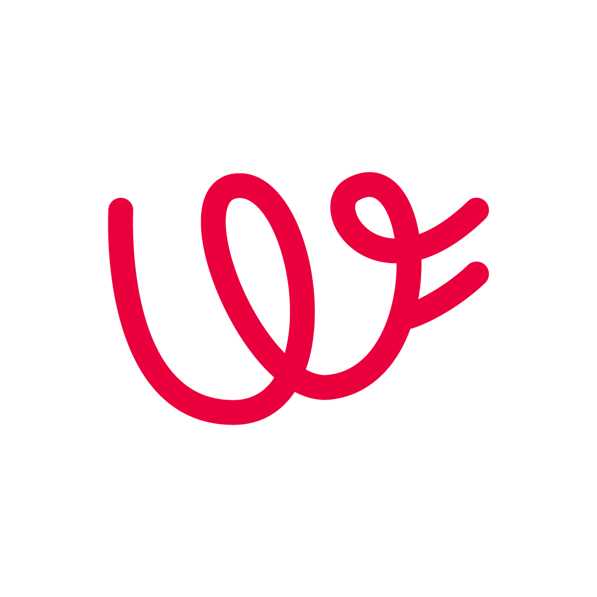
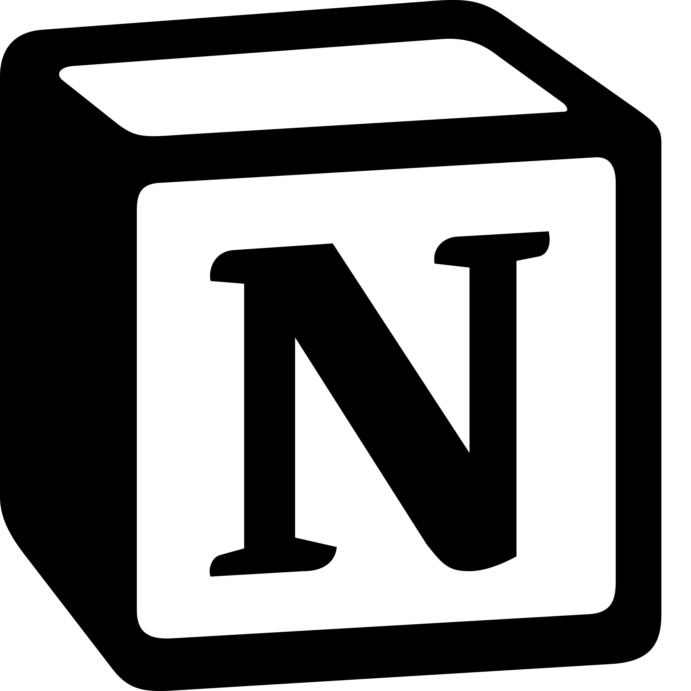
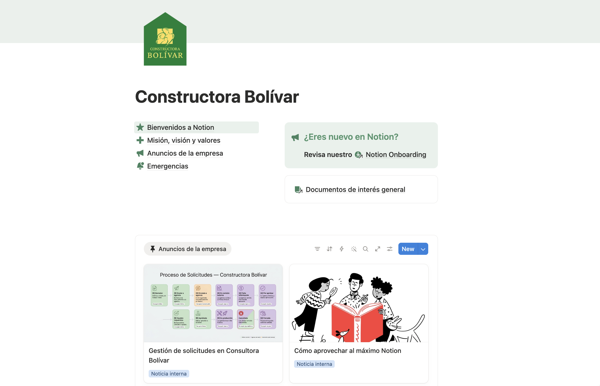
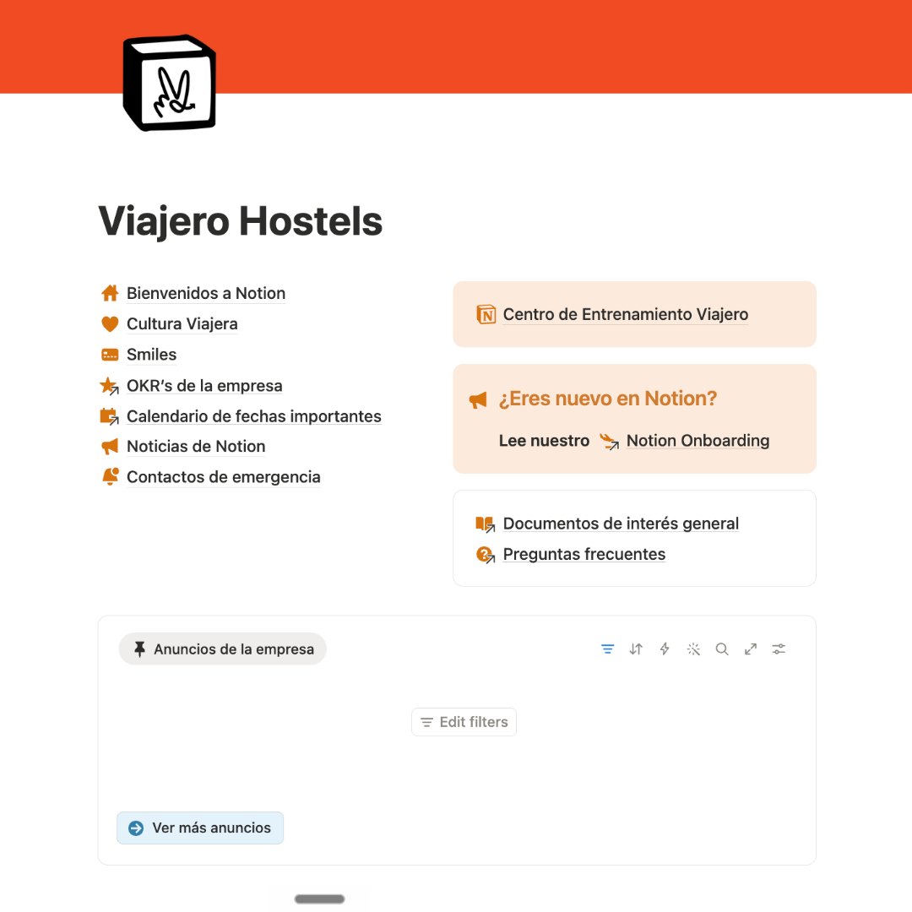

"Nadie sabe en qué va nada."
Cada área coordina sus proyectos por correo. El estado real del trabajo vive en la bandeja de entrada de alguien.

.png)
Te ayudamos a convertir operaciones coordinadas por correo, Excel y WhatsApp en un sistema donde todo el trabajo se ve, se mide y avanza — sin perseguir a nadie.
The Workflow Company
Correo, Excel, WhatsApp y la memoria de alguien. No es falta de esfuerzo — es falta de sistema.

Construido en Notion
Todo el sistema operativo se construye sobre Notion — un solo lugar donde el trabajo se ve, se mide y avanza, sin perseguir a nadie.



Caso de éxito
Quién es el cliente
Una de las constructoras más grandes de Colombia — 17 ciudades, +86 proyectos. Equipo de mercadeo de 40 personas + agencia externa, +1.500 piezas al mes.
El reto
Operación de mercadeo fragmentada entre equipos internos y agencia: reprocesos, versiones perdidas, aprobaciones lentas. Alinear 40 personas + agencia con hábitos distintos y resistencia inicial al cambio.
Qué construimos
Sistema de gestión de mercadeo en Notion conectando equipo interno + agencia (Marca Registrada) en un solo flujo.
El resultado
3–4 horas semanales recuperadas de reprocesos por persona.

Caso de éxito
Quién es el cliente
Cadena de albergues con operación en ~10 países y ~30 propiedades. Equipo distribuido, mayoritariamente operativo y con baja madurez digital.
El reto
Escalar una operación en varios países con equipos distribuidos y lograr que más de 150 personas usaran el sistema todos los días — capacitar equipos en distintos países y husos horarios.
Qué construimos
Sistema de operación en Notion para toda la empresa: tareas, proyectos, indicadores, objetivos y adopción por niveles de usuario.
El resultado
+150 licencias activas — adopción real a escala, no un sistema que nadie abre.
